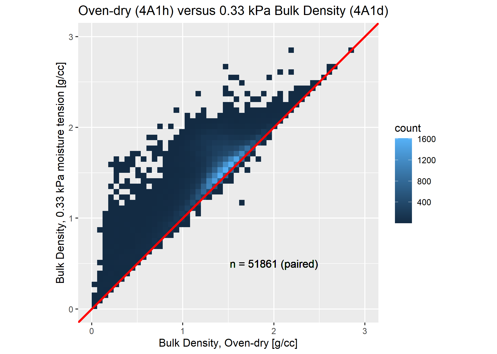
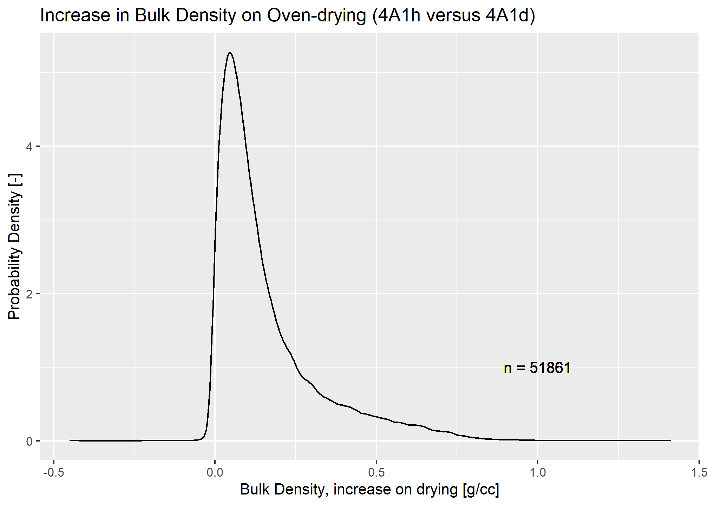
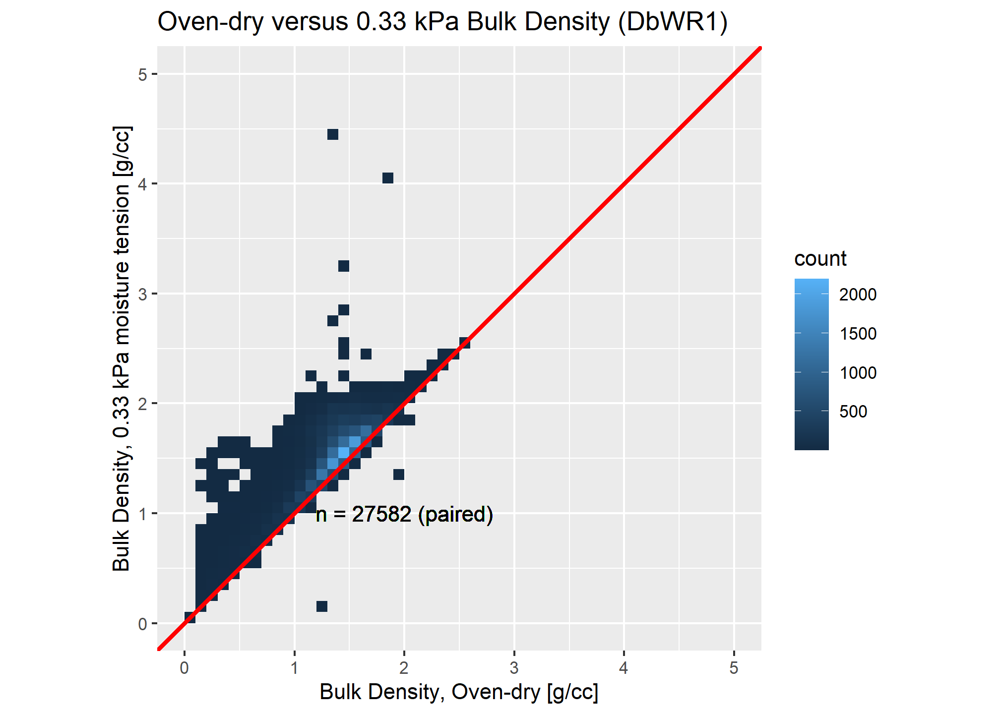
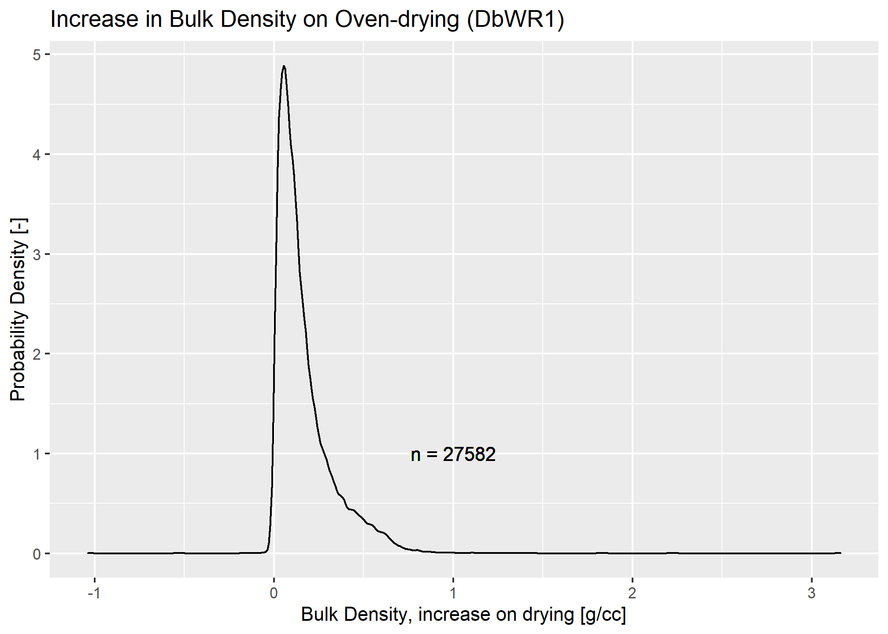
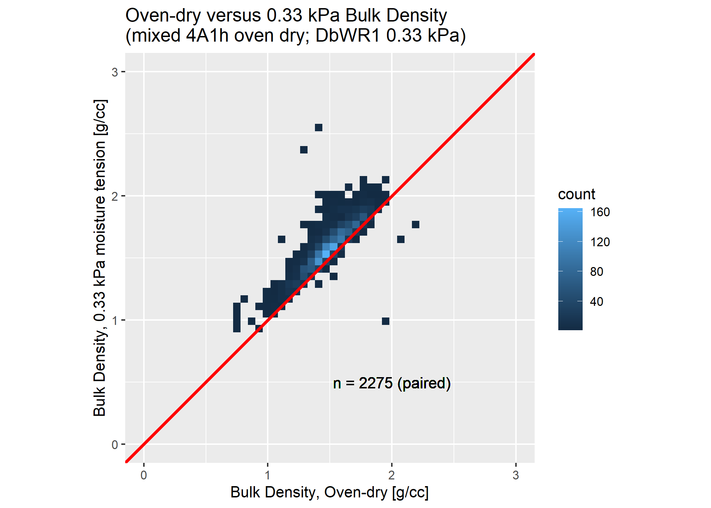
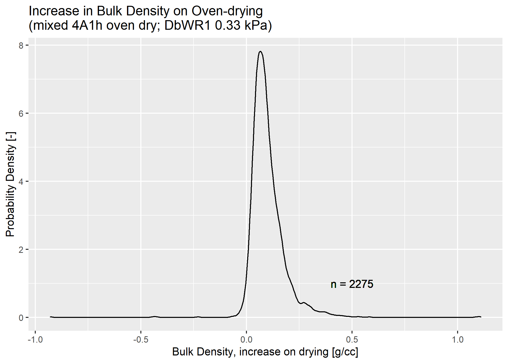

There is a great deal more information on the topics referenced in this document in the National Soil Survey Handbook (NSSH),
Soil particle size distribution, mineralogy, grain packing, soil depth, and organic matter content are among the major properties affecting the bulk densities we observe in soil materials (NSSH, parts 618.32 “Rock fragments in the soil”, 618.44 “Organic Matter”, 618.45 “Parent Material, Kind, Modifier, and Origin”)
Here are two links to graph diagrams showing relationships between analytes and also between bulk density methods specifically within the NCSSC database:
In the USDA system we have mineral and organic soil materials (Keys to Soil Taxonomy, 12th edition, p. 3).
Mineral soil materials are particles passing a 2.0 mm sieve with carbon content (by weight) less than a threshold. The definition in takes into account water saturation of the soil and clay content to the threshold. Organic soil materials are defined as materials exceeding the carbon thresholds for mineral soil materials.
The Whole Soil is the basis we report many measurements on for NCSS products – notably available water capacities, water retention values, and the like. But any measurement that is made on an oven-dry soil mass basis ultimately is corrected to the Whole Soil basis for broader use. This includes effects of larger rock/wood/non-soil materials that occupy volume but lack the bulk characteristics of soil materials.
Soil materials are often the fundamental “object” of our study, but the content and distribution of larger fragment materials within the soil body is very important to soil classification and interpretations.
The solid particles that comprise the Whole Soil are classified based on whether they pass a 2 mm sieve. This naturally provides distinction for materials that are granular in nature. The material that passes the sieve is the fine-earth fraction and the material retained is the coarse fraction. In principle, a particle in a soil could be a mineral grain, an organic fiber, a microbe, a piece of gravel, a tree trunk, a boulder, etc.
Particles are single “pieces” of coherent/cemented material. The process of separating particle from one another systematically based on size and related physical characteristics is called particle size analysis. The relative abundance of [defined] particle size classes (ranges of sizes) in the fine-earth fraction gives us the USDA textural classes (like “loam”).
We define the density of our broadly-defined “particle” \(D_{p}\) as follows:
\[D_{p} = \frac{m_{particle}}{V_{particle}}\]
Assumptions are commonly used for particle density. A common \(D_{p}\) figure for silicates is \(2.65~g/cm^3\). In NASIS at the individual Pedon and map unit Component level we have fields and calculations for particle density. We also have the ability to measure it in the lab for soils or their separates.
Aside from whether the particle passes a 2 mm sieve there are few limits on geometries that we observe in soil materials.
That said, there are often assumptions about particle geometry (e.g. spherical) for various analytical methods (e.g. Stokes’ Law for pipette or hydrometer particle size analysis) and for expediency in physical calculations.
The “bulk” density of a sample integrates all of the masses of particles over a volume of Whole Soil. Conventionally, when coarse particles are present in that volume they are negated from the sample volume to calculate soil material bulk density.
\[D_{b,~soil~material} = \frac{m_{soil~material,~oven~dry}}{V_{soil~material}} = \frac{m_{soil~material,~oven~dry}}{V_{sample} - \frac{m_{fragments}}{D_{p,fragments}}}\]
When one considers that most soil analyses are reported on an oven-dry mass basis (e.g. \(mg/kg\)), bulk density is one of two critical scaling factors to relate to the “Whole Soil” reference condition. The second is the coarse fraction; usually rock fragments.
The volume of fragments in the “layer” being summarized may be appreciably affecting functions such as water movement or heat transfer – so they are important to recognize in the “Whole Soil” despite not being “soil materials.”
Knowing where in the profile a bulk density sample came from, whether it was sieved, whether there were volumetric estimates of fragments, and the moisture state (e.g. field moist, oven-dry, X tension) is essential to interpretation of bulk density values for the Whole Soil body.
If water or fragment contents for a sample or a parent morphologic/analytical “layer” are not known, they are not known. This makes it much harder to interpret bulk density “data” (which is always a calculation involving several measurements or estimates) at face value – you do not know what materials the mass refers to.
Efforts should be made to categorize data sets and provide options to support meta-correlation involving similar parameters when constituent measurements for bulk density are missing or unreliable. An example related to numeric coarse fragment volume would be textural class modifiers (terms like “very gravelly”) applied to USDA textural classes.
See NSSH part 618.32 “Fragments in the Soil”
For an individual sample, we will get sieve separates for the coarse fraction from the lab, but we really lean on the field observations of these properties. Mass basis measurements of fragments (accurate) are be converted to meaningful volume estimates by dividing by \(D_p\). With a standard sieve and a rugged scale, one can relatively readily do field measurements of fragments up to 76 mm.
For larger fragments, if a large proportion are near or greater than 76mm, you would need to “sieve” at least several hundred kilograms of sample to get a “representative” weight per volume – so most commonly this is done by visual estimate (i.e. as part of the routine profile description).
The 2 - 20 mm and 20 - 76 mm fractions are sieved and weighed in the field at sampling time. The field measurements and estimations are provided to the lab as metadata, ultimately paired by labsampnum.
The larger fractions are stored in the NASIS Pedon object. Pedon Horizon Fragments holds weight or volume \(\%\) measures as needed; volume \(\%\) is what is conventionally reported in our maps.
A Carbon pool, or stock, is a value with units of mass C per area. It is an excellent applied example of the effects of soil bulk density on the types of measurements we make in soils and show in soil databases.
In USDA Soil Taxonomy, we typically are dealing in units/scale of \(kg/m^2\); where the 1-D definition is aggregation soil length over \(n\) layers; so “stocks” are conventionally reported over a specific interval (e.g. 0 to 1 m).
\[C{p,soil~material} = \sum_{i=1}^{n}\left(\frac{C_i}{100} * D_{b, i} * L_{i} * \left(1 - \frac{V_{fragments, i}}{V_{Whole~Soil, i}}\right)\right)\]
\(C_p\) is the sum of organic carbon contents \(C_i\) (\(\%~by~mass\)) multiplied by bulk density \(D_{b, i}\) (\(kg/m^3\)) multiplied by layer thickness \(L_i\) (\(m\)). These can be scaled based on the ratio of the layer volume occupied by fragments to the total volume of the layer: \(\left(1 - \frac{V_{fragments, i}}{V_{Whole~Soil, i}}\right)\).
NOTE: The most appropriate “total fragment volume” (accounting for all size classes) for a layer often is not the same as what was observed in an individual sieved core or clod sample at the lab. For instance, the lab reports the sieve separates for 2 - 20 mm and 20 - 76 mm fractions when present, but cannot give you a reliable estimate of any of the rock fragment volumes in the field. Knowing these values precisely relies on the field weight measurements made during sampling.
The percentage cobbles, stones or boulders (using USDA fragment terms) need to come from the visual estimates in all but the most extensively characterized cases (where all size classes are weighed over a large volume of soil material). The precision of visual estimates is not as “quantiative” as the portions measured using scales, but is far more prevalent.
There is more to this than oven-dry bulk density and sieving fragments, though.
The lab_analyte table is found in Soil Data Access (SDA), as well as the various lab data snapshots. SDA is the web API for accessing most of the public data available from the NCSS. This table contains definitions of the analytes (physical and chemical measurements) used in the National Cooperative Soil Survey Characterization Database Snapshot.
The lab_method_code table indexes the specific procedures used to measure analytes, abbreviation codes, and references. There is not a 1:1 relationship between analytes and methods. In some cases, older methods have become obsolete and replaced with new method codes that measure the same analyte, so there are many method codes for one analyte. Some methods measure multiple analytes. Some analytes are more specific and have only a single method code in use. Further, there are derivative analytes that are based on calculations using other analytes.
There is a significant amount of information and metadata stored in the collective group of databases that feed into NASIS (the National Soil Information System).
In NASIS, there are still some important linkages to various internal databases held together by dedicated software and manual interventions. Recognizing important linkages within the database currently requires some insider knowledge. It would be good to make some of these linkages more explicit, transparent and portable.
New delivery methods for the laboratory characterization data are a work in progress by the USDA-NRCS Soil Survey Staff. This effort would be greatly enhanced by collaboration with the Soil Ontology group.
Assumptions in derived values need to be made clear up front. Some commonly used values relating to saturation, “field capacity” and 15 bar moisture are actually derived from other measurements.
It is possible with well-correlated data to estimate conversions between different bases, given other soil properties. This is something we do routinely in NASIS. If this is a goal, it is absolutely critical that primary data with the relevant metadata get allocated near as possible to their “correct” method.
Whether using measured values or otherwise, a person using data in a meta-analysis may want to be able to use their own assumptions, or at least validate our assumptions. A broader, more “comprehensive” set of method codes could uniquely identify major variants of methods that may be encountered “in the wild” to further enhance interoperability.
| analyte_name | analyte_abbrev | analyte_type |
|---|---|---|
| Bulk Density, Syringe, Field Moisture | db_sy | aggregate analyte |
| Bulk Density, Field Core, Field Moisture | db_fc | aggregate analyte |
| Bulk Density, <2mm Fraction, 1/3 Bar, uncorrected | db_13bu | aggregate analyte |
| Bulk Density, clod, 3D | db_3d | aggregate analyte |
| Bulk Density, <2mm Fraction, Air-dry | db_ad | aggregate analyte |
| Weight per Unit Volume, Saturated, Whole Soil | db_satw | derived_analyte |
| Weight per Unit Volume, Saturated, <2mm | db_sat | derived_analyte |
| Weight per Unit Volume, Ovendry, Whole Soil | db_odw | derived_analyte |
| Weight per Unit Volume, @ 1/3 Bar, Whole Soil | db_13bw | derived_analyte |
| Weight per Unit Volume, @ 1/3 Bar, <2mm | db_13bm | derived_analyte |
| Weight per Unit Volume, @ 15 Bar, <2mm | db_15b | derived_analyte |
| Bulk Density, Whole Soil, Moist | db_fmstw | derived_analyte |
| Bulk Density, Whole Soil, Field Moist | db_fmb | derived_analyte |
| Bulk Density, 1/3 Bar, Estimated | db_3est | aggregate analyte |
| Bulk Density, 1/3 Bar, Rewet (Organic Soils) | db_3rw | aggregate analyte |
| Bulk Density, 1/3 Bar, Before Rewet (Organic Soils) | db_3brw | aggregate analyte |
| Bulk Density, <2mm Fraction, Rewet, Ovendry | db_rw_od | aggregate analyte |
| Bulk Density, Clod, Field Water Content | db_fmst | aggregate analyte |
| Bulk Density, Core, <2 mm fraction, Field Moist | db_fmstc | aggregate analyte |
| Bulk Density, Compliant Cavity, Field Moisture | db_cc | aggregate analyte |
| Bulk Density, <2mm Fraction, Reconstituted, Ovendry | db_recd | aggregate analyte |
| Bulk Density, <2mm Fraction, Reconstituted, 1/3 Bar | db_rec3 | aggregate analyte |
| Bulk Density, <2 mm Fraction, 1/10 Bar | db_10b | aggregate analyte |
| Bulk Density, <2mm Fraction, Ovendry | db_od | aggregate analyte |
| Bulk Density, <2mm Fraction, 1/3 Bar | db_13b | aggregate analyte |
Bulk density measurements are composited into what we call an aggregate analyte. The analyte_type column distinguishes these records from records that are derived from other analytes.
Each one of the aggregate analytes types may have records for several specific method codes. For the KSSL’s use of these databases internally, this mechanism has been employed to accomodate both external methods, as well as obsolesence of internal methods.
From a bare-minimum data quality standpoint users of the NCSS Characterization database want to make sure they are not causing duplication by method codes that should be mutually exclusive; e.g. combining measurements of oven dry bulk density with 1/3 bar for same labsampnum.
“Aggregate” means we make repeated measures on subsamples to assess precision and accuracy for individual samples (labsampnum, layers or horizons in a soil profile), and a summary function is applied to yield the final value. For a soil property as fundamental and variable as bulk density, this is a pretty important thing to do for quality control. The measurements are prone to error, so sometimes it is important to have a sanity check.
So, if bulk density is so important, how can we show this? The analyte_algorithm contains an expression that can be evaluated to calculate a derived analyte from other analytes. We will search that field to find dependendent values.
Most bulk density methods in use for soil science should fall into one of the following aggregate analyte “classes,” where they will either conform with an existing SSL method code, or may warrant a new one:
| analyte_name |
|---|
| Bulk Density, <2 mm Fraction, 1/10 Bar |
| Bulk Density, <2mm Fraction, 1/3 Bar |
| Bulk Density, <2mm Fraction, 1/3 Bar, uncorrected |
| Bulk Density, <2mm Fraction, Air-dry |
| Bulk Density, <2mm Fraction, Ovendry |
| Bulk Density, <2mm Fraction, Reconstituted, 1/3 Bar |
| Bulk Density, <2mm Fraction, Reconstituted, Ovendry |
| Bulk Density, <2mm Fraction, Rewet, Ovendry |
| Bulk Density, 1/3 Bar, Before Rewet (Organic Soils) |
| Bulk Density, 1/3 Bar, Estimated |
| Bulk Density, 1/3 Bar, Rewet (Organic Soils) |
| Bulk Density, clod, 3D |
| Bulk Density, Clod, Field Water Content |
| Bulk Density, Compliant Cavity, Field Moisture |
| Bulk Density, Core, <2 mm fraction, Field Moist |
| Bulk Density, Field Core, Field Moisture |
| Bulk Density, Syringe, Field Moisture |
| Derived Analyte |
|---|
| Water Retention Difference, 1/3 to 15 Bar, Whole Soil |
| COLE, Ovendry to 1/3 Bar, <2mm |
| COLE, Ovendry to 1/3 Bar, Whole Soil |
| Weight Percentage, 75 to 250 mm, Whole Soil |
| Weight Percentage, 250 mm and Greater, Whole Soil |
| Weight per Unit Volume, Saturated, Whole Soil |
| Weight per Unit Volume, Saturated, <2mm |
| Weight per Unit Volume, @ 1/3 Bar, Whole Soil |
| Weight per Unit Volume, @ 1/3 Bar, <2mm |
| Weight per Unit Volume, @ 15 Bar, <2mm |
| Water Retention Difference, 1/3 to 15 Bar, Whole Soil |
| Water Retention Difference, 1/3 to 15 Bar, <2mm |
| Water Retention Difference, 1/10 to 15 Bar, Whole Soil |
| Volume Precentage, 0.05 to 2.0 mm, @ 1/3 Bar, Whole Soil |
| Volume Percentage, 75 to 250 mm, @ 1/3 Bar, Whole Soil |
| Volume Percentage, 5 to 20 mm, @ 1/3 Bar, Whole Soil |
| Volume Percentage, 250mm and Greater, @ 1/3 Bar, Whole Soil |
| Volume Percentage, 20 to 75 mm, @ 1/3 Bar, Whole Soil |
| Volume Percentage, 2 to 75 mm, @ 1/3 Bar, Whole Soil |
| Volume Percentage, 2 to 5 mm, @ 1/3 Bar, Whole Soil |
| Volume Percentage, 0.002 to 0.05 mm, @ 1/3 Bar, Whole Soil |
| Volume Percentage, >2mm, @ 1/3 Bar, Whole Soil |
| Volume Percentage, <0.002mm, @ 1/3 Bar, Whole Soil |
| Void Ratio @ 1/3 Bar, Whole Soil |
| Void Ratio @ 1/3 Bar, <2mm |
| Percent Pores Filled at 1/3 bar, Whole Soil |
| Percent Pores Drained at 1/3 bar, Whole Soil |
| Linear Extensibility, 1/3 to 15 Bar, Whole Soil |
| Linear Extensibility, 1/3 Bar to Ovendry, Whole Soil |
| Bulk Density, Whole Soil, Moist |
| Derived Analyte |
|---|
| Weight per Unit Volume, Ovendry, Whole Soil |
| Weight per Unit Volume, @ 15 Bar, <2mm |
| Linear Extensibility, 1/3 to 15 Bar, Whole Soil |
| Linear Extensibility, 1/3 Bar to Ovendry, Whole Soil |
| Derived Analyte |
|---|
| NA |
| Derived Analyte |
|---|
| NA |
| Derived Analyte |
|---|
| NA |
| Derived Analyte |
|---|
| NA |
| Derived Analyte |
|---|
| NA |
| Derived Analyte |
|---|
| NA |
| Derived Analyte |
|---|
| NA |
| Derived Analyte |
|---|
| NA |
| Derived Analyte |
|---|
| NA |
| Derived Analyte |
|---|
| NA |
| Derived Analyte |
|---|
| NA |
| Derived Analyte |
|---|
| NA |
| Derived Analyte |
|---|
| NA |
| Derived Analyte |
|---|
| NA |
| Derived Analyte |
|---|
| NA |
OK, we see that most of these methods are not used as inputs to derived analytes, but the first two (Bulk Density, <2mm Fraction, 1/3 Bar, Bulk Density, <2mm Fraction, Ovendry) have many dependents.
Let’s compare the data we have, before going down a rabbit hole on all of these different methods.
First, we build some comparable datasets; we take the “long format” table subsets queried from lab_physical_properties and merge so we have records that are 1:1 with labsampnum. Query 0.33 kPa and oven-dry data, ignoring specific method codes within classes.
if (!file.exists("sda_db_common.rda")) {
# note there is a 100,000 record and 32 Mb JSON serialization limit with SDA_query()
db13b <- SDA_query("SELECT labsampnum, result_source_key,
bulk_density_third_bar, bulk_density_third_bar_method
FROM lab_physical_properties
WHERE bulk_density_third_bar_method != ''")
dbod <- SDA_query("SELECT labsampnum, result_source_key,
bulk_density_oven_dry, bulk_density_oven_dry_method
FROM lab_physical_properties
WHERE bulk_density_oven_dry_method != ''")
save(db13b, dbod, file = "sda_db_common.rda")
} else {
load("sda_db_common.rda")
}We find we have 6 methods associated with different types of 0.33 kPa bulk density. Two methods (4A1d and DbWR1) are used for 0.33 kPa; the latter methods (4A1eand 4A1f and NK, and 4A1c) are variants not defined in the most recent SSL methods manual.
| Method | Count |
|---|---|
| 4A1c | 2 |
| 4A1d | 51861 |
| 4A1e | 1024 |
| 4A1f | 2112 |
| DbWR1 | 29857 |
| NK | 3888 |
For oven-dry, we have 4A1h and DbWR1.
| Method | Count |
|---|---|
| 4A1h | 61162 |
| DbWR1 | 27582 |
Most of the derived calculations use the Bulk Density at 1/3 bar (33 kPa), and some use oven dry. We will pull from the non-DbWR1 methods first.
NOTE: Method code 4A1d is obsolete code for Bulk Density at 1/3 bar (33 kPa) moisture retention; now 3B1b. 4A1h is obsolete code for Oven-dry Bulk Density; now 3B1c.
| Method | Count |
|---|---|
| 4A1d | 51861 |
| Method | Count |
|---|---|
| 4A1h | 51861 |

| Q0 | Q1 | Q5 | Q50 | Q95 | Q99 | Q100 | MEAN | SD |
|---|---|---|---|---|---|---|---|---|
| -0.45 | 0 | 0.01 | 0.1 | 0.52 | 0.72 | 1.41 | 0.16 | 0.16 |
Also, we will compare the DbWR1 bulk density measures…
| Method | Count |
|---|---|
| DbWR1 | 27582 |
| Method | Count |
|---|---|
| DbWR1 | 27582 |

| Q0 | Q1 | Q5 | Q50 | Q95 | Q99 | Q100 | MEAN | SD |
|---|---|---|---|---|---|---|---|---|
| -1.04 | 0 | 0.02 | 0.11 | 0.5 | 0.67 | 3.16 | 0.16 | 0.16 |
In total, we have 79443 measurements between the “paired” sets
any(dbcb_comparable1$labsampnum %in% dbcb_comparable2$labsampnum)## [1] FALSEFinally, these mixed-method samples have DbWR1 for their third_bar method and 4A1h for their oven-dry.
| Method | Count |
|---|---|
| DbWR1 | 2275 |
| Method | Count |
|---|---|
| 4A1h | 2275 |

| Q0 | Q1 | Q5 | Q50 | Q95 | Q99 | Q100 | MEAN | SD |
|---|---|---|---|---|---|---|---|---|
| -0.93 | -0.01 | 0.02 | 0.08 | 0.24 | 0.38 | 1.11 | 0.1 | 0.08 |
Bulk density integrates many aspects of the soil fabric. Bulk density is describing how the soil “body” occupies space. Our measurement of bulk density is highly affected by the tools we use to extract a sample or measure the volume of a particular portion of soil material. It is also affected by whether (and to what degree) we consider water and/or rock fragments to be soil materials. This is discipline and region specific, but within the National Cooperative Soil Survey we have a robust system for describing these concepts.
In the realm of carbon stocks, for instance, bulk density is a property to consider carefully. Given measured organic carbon contents in, say, grams per kilogram across depth [soil materials change over depth] your choice as an analyst of the soil bulk density-depth function matters to the estimate of the carbon stocks (\(kg/m^2\)) over a depth interval.
The relevance of bulk density to carbon stocks can be seen in the classification of the Humults in U.S. Soil Taxonomy.
Here is an excerpt from the Ultisols suborder key:
HB. Other Ultisols that have one or both of the following:
0.9 percent (by weighted average) or more organic carbon in the upper 15 cm of the argillic or kandic horizon; or
\(12 kg/m^2\) or more organic carbon between the mineral soil surface and a depth of 100 cm.’
You will notice that criterion #1 is a carbon mass-percent weighted average, and criterion #2 is a carbon stock. See the Humults criteria demo for an exploration of soil carbon related taxonomic criteria in the Humults
U.S. Department of Agriculture, Natural Resources Conservation Service. National Soil Survey Handbook (NSSH), title 430-VI. http://www.nrcs.usda.gov/wps/portal/nrcs/detail/soils/ref/?cid=nrcs142p2_054242 (accessed 06 November 2020).
Soil Survey Staff. 2014. Keys to Soil Taxonomy, 12th ed. USDA-Natural Resources Conservation Service, Washington, DC. https://www.nrcs.usda.gov/wps/portal/nrcs/detail/soils/survey/class/taxonomy/?cid=nrcs142p2_053580.